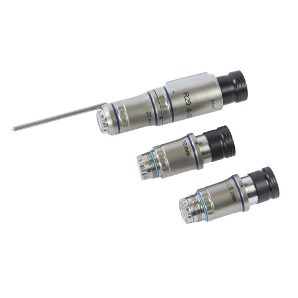
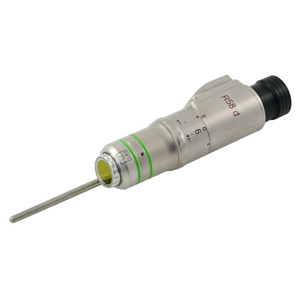

Q-SWITCHED LASER
색소를 선택적으로 타깃하는 레이저
색소 병변은 흔하게 나타나며 대부분 양성입니다. Q-Switched 레이저는 특정 색소에 선택적으로 흡수되는 짧고 강한 빛을 사용해 양성 색소 병변을 제거합니다.

TWO WAVELENGTHS
다양한 색소 병변을 위한 파장
StarWalker는 점, 혈관 병변, 주근깨, 잡티, 기미 등 다양한 색소 병변 치료에 활용됩니다.

깊은 색소 병변
상대적으로 깊은 층의 색소를 타깃합니다.
표면 색소 병변
상대적으로 표면에 가까운 색소를 타깃합니다.
SAFE & MINIMALLY INVASIVE
안전하고 효과적인 최소 침습 치료
색소를 선택적으로 타깃
Q-Switched 레이저는 피부 세포가 아닌 색소를 선택적으로 파괴해 피부를 손상시키지 않고 색소를 제거할 수 있습니다. 기미 치료와 여러 색상의 문신 제거에도 활용됩니다.
피부 표면의 정밀한 제거
Er:YAG 레이저는 각화증, 점 등 색소 병변을 피부 표면과 얕은 진피층까지 정밀하게 제거하는 데 사용됩니다. 임상 연구에서는 1회 치료 후 최대 93%의 임상적·조직학적 개선이 확인되었습니다.
HIGH-ENERGY PULSE
깊이와 범위를 고려한 정밀한 색소 타깃
고에너지 단일 펄스와 다양한 조사 조건을 활용해 색소 병변의 특성과 위치를 고려한 치료를 지원합니다.
색소를 정밀하게 타깃
짧고 강한 레이저 펄스가 색소 입자에 전달되어, 색소를 선택적으로 타깃하는 데 활용됩니다.
넓은 부위에도 균일한 조사
큰 스폿 사이즈와 에너지 설정을 통해 넓은 치료 부위에 효율적으로 레이저를 조사할 수 있습니다.
깊은 색소 병변까지 고려
고에너지와 큰 스폿 사이즈는 상대적으로 깊은 색소 병변을 고려한 치료 조건에 활용됩니다.
LASER SYSTEMS
색소 병변 치료 장비
StarWalker
MaQX 피크 에너지와 네 가지 색상, 다양한 기술을 갖춘 색소 병변 제거 시스템
AvalancheLase
Alexandrite 755 nm와 Nd:YAG 1064 nm 듀얼 파장을 기반으로, 제모와 양성 색소 병변 치료 등에 활용되는 레이저 시스템
HANDPIECES
시술 목적에 맞는 핸드피스
StarWalker의 다양한 핸드피스를 살펴보세요.

Titanium R28
고급 스마트 컨트롤 핸드피스로, 퀵 릴리스(Quick-Release) 방식과 2~8 mm 자동 스폿 크기 감지 기능을 갖추고 있습니다. StarWalker 레이저 시스템용으로 설계되었으며, Q-Switched Nd:YAG 및 KTP Nd:YAG 레이저 소스와 함께 사용할 수 있습니다.

Titanium R29
고급 스마트 컨트롤 핸드피스로, 퀵 릴리스(Quick-Release) 방식과 2, 2H, 3, 10, 12.5, 20 mm 자동 스폿 크기 감지 기능을 갖추고 있습니다. StarWalker 레이저 시스템용으로 설계되었으며, Q-Switched Nd:YAG 및 KTP Nd:YAG 레이저 소스와 함께 사용할 수 있습니다.

Titanium R58
고급 스마트 컨트롤 핸드피스로, 퀵 릴리스(Quick-Release) 방식과 1.5~6 mm 자동 스폿 크기 감지 기능을 갖추고 있습니다. StarWalker 레이저 시스템용으로 설계되었으며, VERDE KTP 레이저 소스와 함께 사용할 수 있습니다.